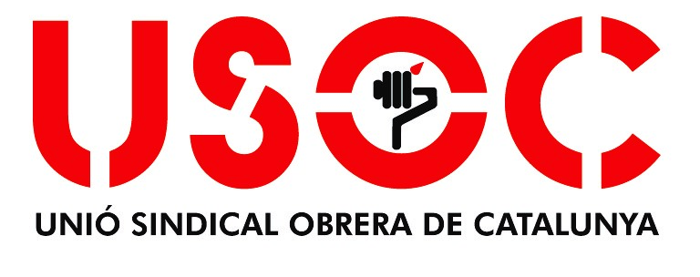

Boletín de noticias
Sección sindical USOC
08 de julio de 2024

-
Desde la sección sindical de USOC hemos creado este "boletín informativo" que contiene noticias y apuntes importantes de nuestros derechos y de nuestro convenio. Si quereis aportar ideas, poneros en contacto con nosotros a través del siguiente correo electronico:
-
seccionsindicalusoc.sirsa@gmail.com
-
COMUNICADO ESPECÍFICO SOBRE LOS DERECHOS DE LOS TRABAJADORES DE SIRSA, INTERLIMP Y SIRSASA EN CASO DE SUBROGACIÓN (I):
-
Obligación de Sirsa como empresa entrante de información a todos los trabajadores:
-
Los trabajadores de la empresa saliente pasarán a estar adscritos a la nueva contrata, respetando ésta TODOS los derechos y obligaciones que tuvieran con la anterior.
-
La nueva empresa deberá aportar a sus nuevos trabajadores un documento o carta de subrogación en la que se reflejará lo siguiente:
-
El centro de trabajo en el que se realicen sus funciones.
-
La modalidad del contrato que tenga el trabajador.
-
Su grupo y nivel profesional.
-
La jornada semanal y la distribución de ésta.
-
IMPORTANTE: La no entrega de este documento no invalida la subrogación.
-
Trabajadores que tienen derecho a ser subrogados:
-
Trabajadores en activo que lleven un mínimo de cuatro meses de antigüedad en el servicio, independientemente de cual sea el tipo de contrato que tengan.
-
Trabajadores con derecho a reserva de puesto de trabajo, ya sea por estar de baja, en vacaciones, de permiso retribuido o con una incapacidad permanente sujeta a revisión o situaciones similares a éstas, siempre que tengan un mínimo de cuatro meses de antigüedad en el puesto que temporalmente no ocupan.
-
Trabajadores que estén sustituyendo a los trabajadores que se hallen en alguno de los supuestos anteriores, sea cual sea la antigüedad en la empresa.
-
Trabajadores que hayan entrado debido a ampliaciones de plantilla en los cuatro meses anteriores al cambio de empresa.
-
Nuevos trabajadores que hayan entrado en puestos fijos con motivo de las vacantes definitivas que se hayan producido en los cuatro meses anteriores al cambio de empresa. Este punto debe ser acreditado debidamente por la empresa saliente.